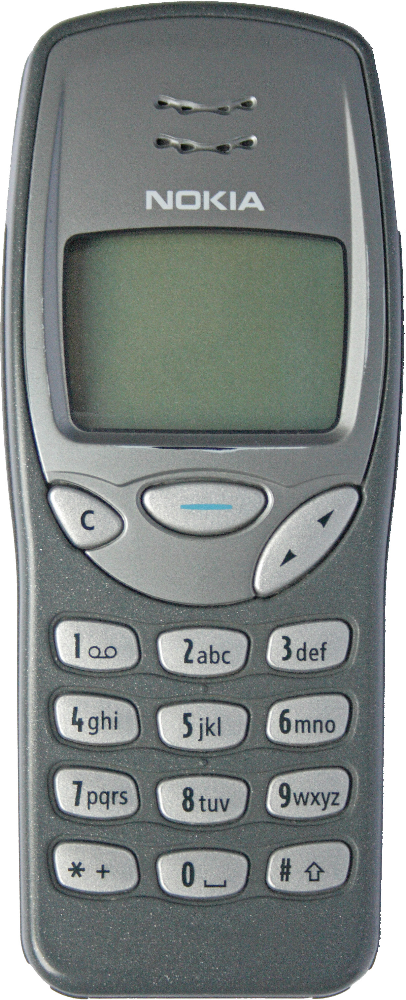

BareBoard Autopsy Report · Mobile Phones
Nokia 3210 Likely
The DCT3 classic — announced March 18, 1999 and released in Q2 1999 Wikipedia — among the best-selling mobile phones of all time and one of the first with an internal antenna. Public teardowns document a Texas Instruments MAD2PR1 baseband, Nokia CCONT power ASIC, and discrete memory Likely iFixit teardown nokia-dct3-re hardware atlas. We have never owned, opened, booted, probed, tested, or disassembled a Nokia 3210.

What is this thing?
The Nokia 3210 (type NSE-8) is a dual-band GSM 900/1800 candybar from Nokia's DCT3 generation Wikipedia. It is remembered for three firsts-at-scale: the internal antenna, the built-in composer for monophonic ringtones, and preloaded Snake — wrapped in Xpress-on swappable covers that made it a youth-culture icon TechSpot Wikipedia.
Timeline
- 1999-03-18 — Nokia 3210 announced Wikipedia.
- Q2 1999 — Released Wikipedia.
- 1999–2000s — Becomes one of the best-selling phones in history; DCT3 reverse-engineering community later documents the MAD2 platform in depth nokia-dct3-re hardware atlas.
- 2026-09-27 — This report published from public records; no unit on our bench.
Outside
B Navi-key + C key + two softkeys
C Xpress-on swappable front and back covers Wikipedia
D Internal antenna — no external whip TechSpot
E Removable rear cover; extended NiMH/Li-ion battery options
123.8 × 50.5 × 16.7–22.5 mm, 151 g with standard battery Wikipedia.
Board
Public documentation describes a DCT3 board built around the TI MAD2PR1 (baseband MCU+DSP), the Nokia CCONT NMP70467 power-management ASIC, Intel F160B3TA flash (2 MiB), an Atmel 24C128 serial EEPROM, and Samsung KM68U1000 SRAM (128 KiB) Likely nokia-dct3-re hardware atlas iFixit teardown. The RF section uses discrete power amplifiers (BGY252/BGY262 family) and a Hitachi duplexer Likely nokia-dct3-re hardware atlas. An archived iFixit teardown PDF shows the board layout and shielding iFixit teardown (PDF via Internet Archive).
Chips
| Ref | Marking / identity | Role | Confidence | Dig deeper |
|---|---|---|---|---|
| BB | TI MAD2PR1 | Baseband: MCU + DSP for GSM stack and UI | Likely | hardware atlas · MAD2 notes — no public datasheet located |
| PM | Nokia CCONT — NMP70467 | Power management ASIC | Likely | hardware atlas — no public datasheet located |
| Flash | Intel F160B3TA — 2 MiB | Firmware storage | Likely | hardware atlas — no public datasheet located |
| EEPROM | Atmel 24C128 | Serial EEPROM (calibration / settings) | Likely | hardware atlas — 24C128-class datasheets are public from the manufacturer family |
| SRAM | Samsung KM68U1000 — 128 KiB | Working memory | Likely | hardware atlas · KM68V1000B datasheet (PDF mirror) |
| Audio | NMP0581 | Audio/UI ASIC (DCT3 standard block) | Likely | hardware atlas — no public datasheet located |
| RF PA | BGY252 / BGY262 family | GSM power amplifiers | Likely | hardware atlas — no public datasheet located |
| Duplexer | Hitachi HWYN202A | Antenna duplexer | Likely | hardware atlas — no public datasheet located |
FCC
No FCC filing for the Nokia 3210 (NSE-8) has been located in public records Unknown. The 3210 predates Nokia's consistent U.S. certification trail for this form factor, and no grantee code naming the NSE-8 has been reviewed. This section will be completed from the FCC OET database if a filing surfaces, or from a unit label when one reaches our bench.
Debug / service modes
DCT3 Nokias expose FBUS and MBUS serial service interfaces, documented in Nokia service literature and the community service-bootstrap notes nokia-dct3-re service bootstrap. We describe these only at the documented high level: wired serial service interfaces for factory and service use. Their physical pad locations on the 3210 board are unverified. We have never connected to one, we publish no pinout, no baud rate, no procedure, and no instructions for defeating any lock or protection. We listen; we don't knock.
Public findings & what we didn't do
- ✅ Assembled the DCT3 chip table from teardown and reverse-engineering documentation hardware atlas iFixit.
- ✅ Used reverse-engineering references for architecture only — no extraction or exploitation instructions.
- ✅ Stated the FCC gap plainly instead of guessing a grantee code.
- ❌ We have not opened, booted, probed, or photographed a Nokia 3210 ourselves.
- ❌ We have not verified FBUS/MBUS pad locations, PCB revision, or date codes.
- ❌ We have not tested any service interface or captured any boot log.
By the numbers
| Metric | Value | Source |
|---|---|---|
| Display | Monochrome, 84×48 px | Wikipedia |
| Network | Dual-band GSM 900/1800 | Wikipedia |
| Baseband / memory | TI MAD2PR1; 2 MiB flash; 128 KiB SRAM | Likely hardware atlas |
| Weight / size | 151 g; 123.8 × 50.5 × 16.7–22.5 mm | Wikipedia |
| Internal antenna | Yes — among the first at this scale | TechSpot |
Glossary
| DCT3 | Nokia's third-generation digital core technology platform (late-1990s GSM). |
| MAD2 | Texas Instruments baseband family (MCU + DSP) used across DCT3 Nokias. |
| CCONT | Nokia power-management ASIC in the DCT3 generation. |
| FBUS / MBUS | Nokia wired serial service interfaces (fast bus / master bus) for factory and service use. |
| NSE-8 | Nokia type designation for the 3210. |
Sources & confidence
- nokia-dct3-re — hardware atlas (community reverse-engineering documentation; architecture only).
- nokia-dct3-re — service bootstrap (architecture only).
- iFixit — Nokia 3210 teardown (secondary).
- iFixit teardown PDF (Internet Archive) (secondary).
- Samsung KM68V1000B datasheet (PDF mirror) (primary document, mirrored).
- Nokia 3210 — Wikipedia (secondary).
- TechSpot — legends: Nokia phones (secondary).
| Claim | Confidence | Basis |
|---|---|---|
| MAD2PR1, CCONT NMP70467, F160B3TA, 24C128, KM68U1000, NMP0581, BGY252/262, HWYN202A | Likely | Teardown + community documentation; die-level verification awaits the bench |
| Dates, specs, internal antenna, NSE-8 | Likely | Corroborated secondary records |
| FBUS/MBUS pad locations | Unknown | Unverified — awaits the bench |
| FCC ID | Unknown | No filing located |
Legal note
This report is a transformative educational summary of publicly available records. Product names and marks belong to their owners. We describe only publicly documented service interfaces at a high level; we publish no lock-bypass, authentication-defeat, firmware-extraction, or unsafe service procedures. Reverse-engineering references are cited for hardware architecture only. Our posture: we listen, we don't knock.
Related reports
- Nokia 1100 — the DCT4 successor generation
- Nokia 1110 / 1110i — the mid-2000s DCT4 entry phone
- Nokia 1200 — the 2007 ultrabasic